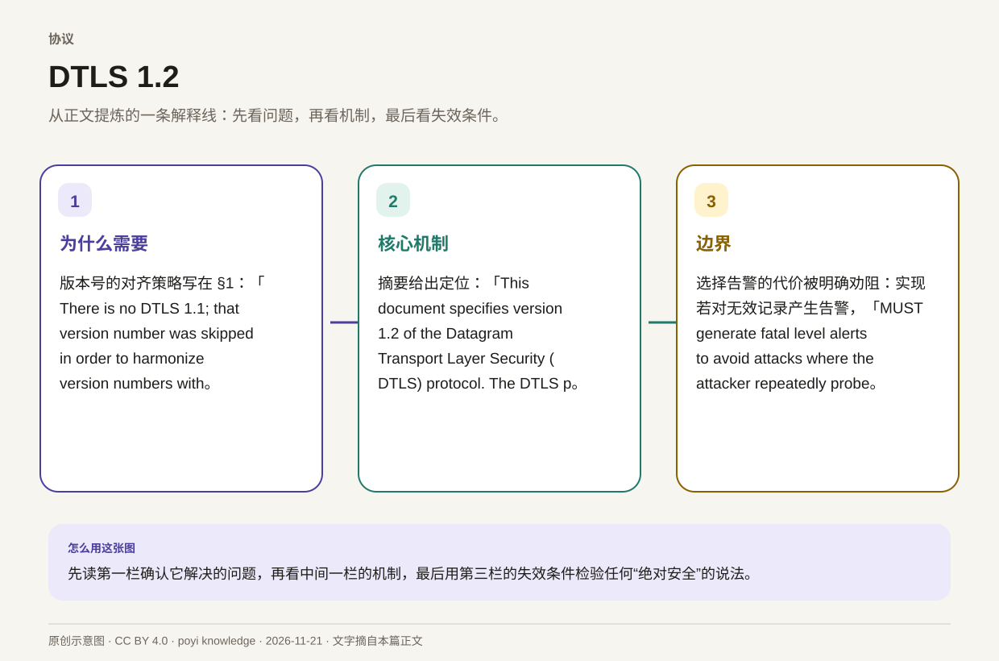
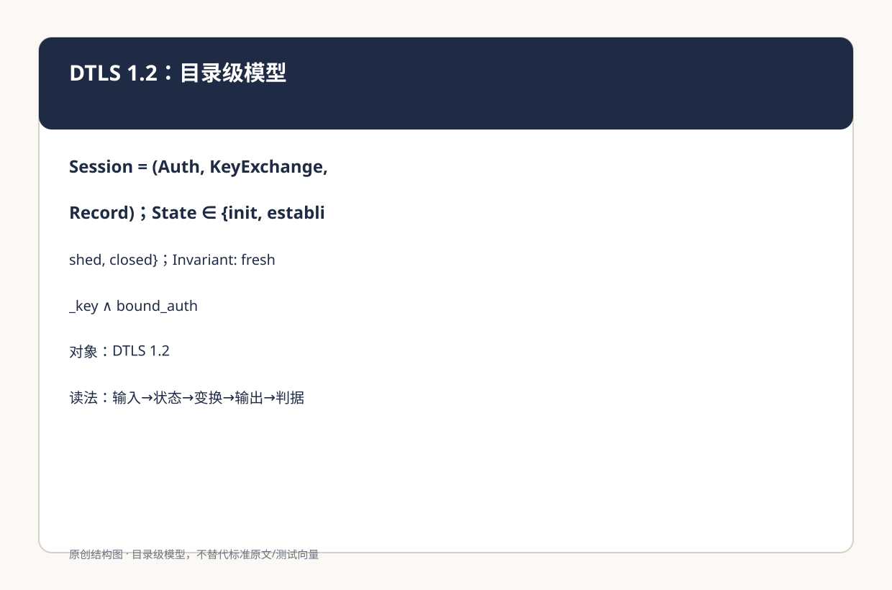

原理与机制
协议：DTLS 1.2（DTLS 1.2）。摘要给出定位：「This document specifies version 1.2 of the Datagram Transport Layer Security (DTLS) protocol.The DTLS protocol provides communications privacy for datagram protocols.」并说明「This document updates DTLS 1.0 to work with TLS version 1.2.」

为什么重要
版本号的对齐策略写在 §1：「There is no DTLS 1.1; that version number was skipped in order to harmonize version numbers with TLS.」算法层则直接继承 TLS 1.2——§4.1.2.4 说明「The existing AEAD cipher suites, defined in [ECCGCM] and [RSAGCM], can be used with DTLS exactly as with TLS 1.2.」
应用与实例
与 TLS 最大的行为差异是容错：§4.1.2.7 规定无效记录「In general, invalid records SHOULD be silently discarded, thus preserving the association; however, an error MAY be logged for diagnostic purposes.」记录层本身则与 TLS 1.2 几乎相同，「The only change is the inclusion of an explicit sequence number in the record.」

边界与攻击面
选择告警的代价被明确劝阻：实现若对无效记录产生告警，「MUST generate fatal level alerts to avoid attacks where the attacker repeatedly probes the implementation to see how it responds to various types of error.」，而在 UDP 上「this practice is NOT RECOMMENDED for such transports.」§4.1 另要求 epoch 与序号唯一——「implementations MUST NOT allow the same epoch value to be reused within two times the TCP maximum segment lifetime.」
历史与背景
RFC 6347 头部为 E.Rescorla（RTFM, Inc.）与 N.Modadugu（Google, Inc.），类别 Standards Track，2012 年 1 月，带 ISSN 行并标注「Obsoletes: 4347」，没有 Updates 行；§8 的「Changes since DTLS 1.0」把与 TLS 1.2 对齐、AEAD 一节的加入等改动逐项列出。
技术参数与复算边界
该条目的形式模型是 (\mathrm{Adv}^{\Pi}_A(\lambda)\le n\cdot\mathrm{Adv}^{\mathrm{prf}}F(\lambda)+\varepsilon{\mathrm{aead}}(\lambda))。输入：输入：DTLS 1.2的公开参数、密钥/随机数与消息；变量说明：Π 协议，A 敌手，n 会话数，PRF/AEAD 为底层原语。 预期输出：按 DTLS 1.2 的规范执行后得到可验证的输出或可比较的优势界。 复算必须给出输入、步骤、输出和单位；示例只演示流程，不替代标准测试向量。
复杂度由密钥长度、分组/状态规模、轮数、随机数质量和敌手模型共同决定；参数越界、版本差异与实现侧信道都可能使公式结论失效。已登记限制：该条目只给出形式模型与可复算步骤，不声称已完成生产实现、侧信道认证或第三方安全评估。
逐步示例与核验
形式模型与复算步骤
[\mathrm{Adv}^{\Pi}_A(\lambda)\le n\cdot\mathrm{Adv}^{\mathrm{prf}}F(\lambda)+\varepsilon{\mathrm{aead}}(\lambda)]
DTLS 1.2的公开参数、密钥/随机数与消息；变量说明：Π 协议，A 敌手，n 会话数，PRF/AEAD 为底层原语。1.把协议消息序列写成状态机。2.用混合论证逐个替换原语。3.把剩余优势归约到 PRF/AEAD 安全。边界：公式只覆盖已登记的参数与假设；参数取值、标准版本和实现细节仍以来源为准。
参考出处
- Wikipedia search entry for DTLS 1.2. https://zh.wikipedia.org/w/index.php?search=DTLS%201.2
- Handbook of Applied Cryptography (Menezes, van Oorschot, Vanstone). https://www.cacr.math.uwaterloo.ca/hac/